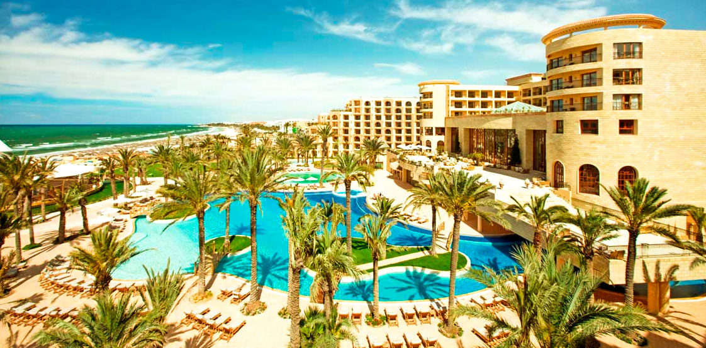
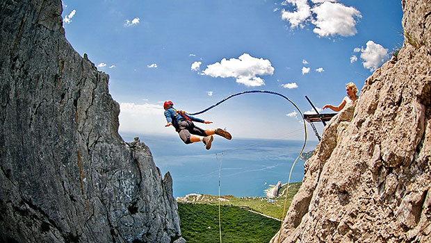

<!DOCTYPE html>
<html>
  <head>
    <meta charset="utf-8">
    <meta name="viewport" content="width=device-width, initial-scale=1">
    <title>Aquamarine hotel</title>
    <link rel="stylesheet" href="https://maxcdn.bootstrapcdn.com/bootstrap/3.3.7/css/bootstrap.min.css" integrity="sha384-BVYiiSIFeK1dGmJRAkycuHAHRg32OmUcww7on3RYdg4Va+PmSTsz/K68vbdEjh4u" crossorigin="anonymous">
    <link rel="stylesheet" href="css/style.css">
    <!--[if lt IE 9]>
      <script src="https://oss.maxcdn.com/libs/html5shiv/3.7.0/html5shiv.js"></script>
      <script src="https://oss.maxcdn.com/libs/respond.js/1.4.2/respond.min.js"></script>
    <![endif]-->
  </head>
  <body>
    <div class="container-fluid">

        <div class="row">
         <div class="top col-sm-12 top__container">

           <div class="container">
             <!--HEADER-->
           <div class="header row clearfix">

            <div class="header__logo col-sm-4">
             
             <p class="header__logo__text">
               Сеть турагенств «Солнце в кругу»
             </p>
            </div>
            <div class="header__telephone col-sm-6">
             <p class="header__telephone__text">
               044 123-45-67
             </p>
             <a class="header__telephone__link" href="#">обратный звонок</a>
            </div>
            <div class="header__networks col-sm-2">
             <a href="#" class="header__networks__link--fb"></a>
             <a href="#" class="header__networks__link--google"></a>
             <a href="#" class="header__networks__link--insta"></a>
            </div>
           </div>
           </div>
         </div>
        </div>

   <div class="container">

     <div class="row">
       <!--ABOUT HOTEL-->
      <div class="hotel col-sm-12">
         
         <div class="hotel__tour">
           <p class="hotel__tour__text--country">
             Тур  в Созополь,  Болгария
           </p>
           <p class="hotel__tour__text--code">
             КОД ТУРА
           </p>
           <p class="hotel__tour__text--articul">
             3094119
           </p>
         </div>
      </div>
     </div>

    <div class="row">
      <div class="hotel__info col-sm-9">
         <div class="hotel__info__about">
           <a href="#" class="hotel__info__about__link">Aquamarine hotel</a>
           <div class="hotel__info__about--star">
           </div>
           <p class="hotel__info__about--price">
             $256
           </p>
         </div>
         <!--ABOUT HOTEL RATE-->
         <div class="hotel__info__rate">
           <p class="hotel__info__rate--recall">
             Оценка отеля <span class="recall">45 отзывов</span>
           </p>
           <p class="hotel__info__rate--total">
             8.4
           </p>
           <div class="hotel__info__rate--wrapper">
           <p class="hotel__info__rate--room">
            <span class="rate__head">номер</span> 8.9
           </p>
           <p class="hotel__info__rate--food">
             <span class="rate__head">питание</span> 8.1
           </p>
           <p class="hotel__info__rate--service">
             <span class="rate__head">сервис</span> 7.9
           </p>
           <p class="hotel__info__rate--infrast">
             <span class="rate__head">инфраструктура</span> 8.9
           </p>
         </div>
         </div>
      </div>
      <div class="hotel__info hotel__info--triangle col-sm-3 hidden-xs clearfix">
       <div class="hotel__info__days">
         <p class="hotel__info__days--320">
           320
         </p>
         <p class="hotel__info__days--sunny">
           солнечных  дней в году
         </p>
       </div>
      </div>
    </div>

    <div class="row">
      <!--EXTREM TOURS-->
     <div class="extrem col-sm-6">
      
        <div class="extreme__text__name clearfix">
         <a href="#" class="extreme__text__name__head">Шелковый путь</a>
         <p class="extreme__text__name__price">
           $987
         </p>
        </div>
        <p class="extreme__text__name__note">
          Экстремальный маршрут
        </p>
     </div>
     <div class="extrem col-sm-6">
      
        <div class="extreme__text__name clearfix">
         <a href="#" class="extreme__text__name__head">Не дай Бог не любишь</a>
         <p class="extreme__text__name__price">
           $59
         </p>
        </div>
        <div class="extreme__text__name--under clearfix">
          <p class="extreme__text__name__note">
            Роупджампинг
          </p>
          <p class="extreme__text__name__discount">
            $90
          </p>
        </div>
     </div>
   </div>

   <!--TEXT SECTION-->
   <div class="text__section row">
    <div class="about col-sm-9">
      <h1 class="about__head">36,6 градусов по цельсию и познавательная физика</h1>
      <p class="about__text__entry">
        Никто не задумывался почему температура человеческого тела 36,6 С? Почему не иная? Почему не равна дневной температуре окружающего пространства к примеру? Но почему так произошло? Первая причина лежит от нас на временной оси в прошлом на расстоянии в несколько миллиардов лет. Именно тогда появилась жизнь.
      </p>

      <p class="about__text">
        Грубо говоря первичные репликаторы огородились защитной оболочкой от остальной части океана — создав клетки. Клетки это замкнутые водные резервуары, в которых вся жизнедеятельность проходит в водной среде. И все сухопутные организмы концептуально это машины выживания репликаторов, мобильная (в случае с животными), благоприятная водная среда для репродукции, окруженная защитной оболочкой от внешнего мира.
      </p>

      <h4 class="about__head3">Ищем ответ</h4>

      <p class="about__text">
        Что интересно, все теплокровные функционируют в пределах той же области температур что и человек. Например температура у лошадей 37,5-38,5; у коров 37,5-39,5; кур 40,5-42,5; свиней 39,0-40,0; кошек 38,0-39,5; обезьян 38,1; голубей 41,0-44,0. Ответ лежит в области нет, не биологии. А в области физики воды.
      </p>

      <div class="about__text__marked">
       <p class="about__text">
        Дело в том, что теплоемкость воды нелинейно зависит от температуры. Теплоемкость это количество энергии, которое необходимо потратить для того что бы нагреть 1 кг вещества на 1 градус. При увеличении температуры она как бы пикирует как штурмовик, и возносится ввысь после прохождения нижней точки в 36,8 градусов Цельсия. В организме человека вода составляет около 65-70%, её теплоемкость огромна.
       </p>
      </div>

      <p class="about__text">
        90% энергии получаемой с пищей, теплокровные потому тратят только лишь на поддержание постоянной температуры внутренней среды. На нагревание воды. Потому эта ямка, минимум, в котором нужно было тратить минимальное количество энергии на поддержание своего состояния, как аттрактор, стягивал на себя на протяжении эволюции все «модели» теплокровных. Фенотипы, с рабочей температурой иных диапазонов были слишком «прожорливыми» и отсеивались отбором.
      </p>

      <h3 class="about__head4">Хлорофилл и красота</h3>

      <p class="about__text">
        Могло случится так что небо было бы ядовито-желтое а не голубое. Трава так же красная. Нравился бы нам такой пейзаж? Почему красный, ярко-желтый, создают чувство неспокойствия и не подходят для идилических райских картин ландшафтов как голубой и зеленый? Дело не в них а в нас. Мы продукт эволюции, продукт среды в которой мы развивались. Что и было показано на примере температуры тела.
      </p>

      <p class="about__text">
        Начну с далека, так уж нужно, ничего не поделаешь… Зеленым цветом на картинке окрашена трава, трава это растение. Первыми вышли задолго до животных на сушу растения. Они сформировали то первичное окружение для живых организмов, создали им условия существования на суше. Стали источником пищи и крова, ведь животные гетеротрофы. Растения же в основном автотрофы. Так вышло что у растений при участии хлорофилла осуществляется процесс фотосинтеза. А по совместительству он так же зелёный пигмент, обусловливающий окраску хлоропластов растений в зелёный цвет.
      </p>

      <p class="about__text">
        Так же интересна физическая причина наших понятий красоты.
      </p>

      <div class="table-responsive">
       <table class="table about__table">
        <tr>
          <th class="active"></th>
          <th class="active">Хлорофилл a</th>
          <th class="active">Хлорофилл b</th>
          <th class="active">Хлорофилл c1</th>
          <th class="active">Хлорофилл c2</th>
          <th class="active">Хлорофилл cd </th>
        </tr>

        <tr>
          <th>Формула</th>
          <td>C<sub>55</sub>H<sub>72</sub>O<sub>5</sub>N<sub>4</sub>Mg</td>
          <td>C<sub>55</sub>H<sub>70</sub>O<sub>6</sub>N<sub>4</sub>Mg</td>
          <td>C<sub>35</sub>H<sub>30</sub>O<sub>5</sub>N<sub>4</sub>Mg</td>
          <td>C<sub>35</sub>H<sub>28</sub>O<sub>5</sub>N<sub>4</sub>Mg</td>
          <td>C<sub>54</sub>H<sub>70</sub>O<sub>5</sub>N<sub>4</sub>Mg</td>
        </tr>

        <tr>
          <th>C2 группа</th>
          <td>-CH<sub>3</sub></td>
          <td>-CH<sub>3</sub></td>
          <td>-CH<sub>3</sub></td>
          <td>-CH<sub>3</sub></td>
          <td>-CH<sub>3</sub></td>
        </tr>

        <tr>
          <th>C3 группа</th>
          <td>-CH=CH<sub>2</sub></td>
          <td>-CH=CH<sub>2</sub></td>
          <td>-CH=CH<sub>2</sub></td>
          <td>-CH=CH<sub>2</sub></td>
          <td>-CHO</td>
        </tr>
       </table>
     </div>

     <ul>Как найти эти консервативные признаки? Наиболее часто рассматривают 5 источников информации о них:
       <li class="about__list">&#8212;эмбриологические исследования;</li>
       <li class="about__list">&#8212;тератологические данные;</li>
       <li class="about__list">&#8212;сравнительно-морфологические данные;</li>
       <li class="about__list">&#8212;анализ врожденных поведенческих программ (этологические данные);</li>
       <li class="about__list">&#8212;изучение взаимосвязи с другими видами.</li>
     </ul>
    </div>

    <!--RIGHT SECTION-->
    <div class="fact col-sm-3 hidden-xs">
     <p class="about__coefficient">
       0,71
     </p>
     <p class="about__whr">
       WHR здоровой  женщины
     </p>
     <p class="about__text__woman">
       Один из весьма надежных показателей здоровья, фертильности, как раз и является «waistto hip ratio».
     </p>
    </div>
  </div>

  <!--FOOTER-->
  <div class="footer row clerfix">
   <div class="col-sm-10">
    <p class="footer__text">
     Тестовое задание на вакансию верстальщика в компанию
    </p>
    <a class="footer__company__link" href="https://aweb.ua/company/vacancies/html-coder" target="_blank">Aweb</a>
   </div>

   <div class="footer__networks col-sm-2">
     <a href="#" class="footer__networks__link--fb"></a>
     <a href="#" class="footer__networks__link--google"></a>
     <a href="#" class="footer__networks__link--insta"></a>
   </div>
  </div>

  </div>
  </div>

  </body>
</html>
